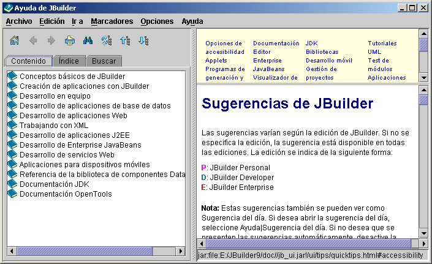

El Visualizador de ayuda
El Visualizador de ayuda de JBuilder proporciona acceso a toda la documentación en pantalla de JBuilder. Seleccione Ayuda|Temas de ayuda para abrir el Visualizador de ayuda:
- Si desea abrir un manual y consultar su contenido, haga doble clic en el icono del manual o pulse la tecla de flecha derecha. Utilice el ratón o las teclas de flecha arriba y abajo para seleccionar un tema.
- Si desea buscar un término en el Índice, pulse la pestaña Índice y escriba el texto. Utilice la pestaña Buscar para realizar búsquedas en toda la documentación en pantalla. También es posible buscar un texto determinado dentro de un tema, copiar el texto al portapapeles para utilizarlo en el programa y definir marcadores, así como buscar en Internet.

Si desea obtener ayuda sensible al contexto, pulse el botón Ayuda que se muestra en los cuadros de diálogo o F1.
Si desea más información, consulte:
Introducción a JBuilder: La ayuda en pantalla de JBuilder